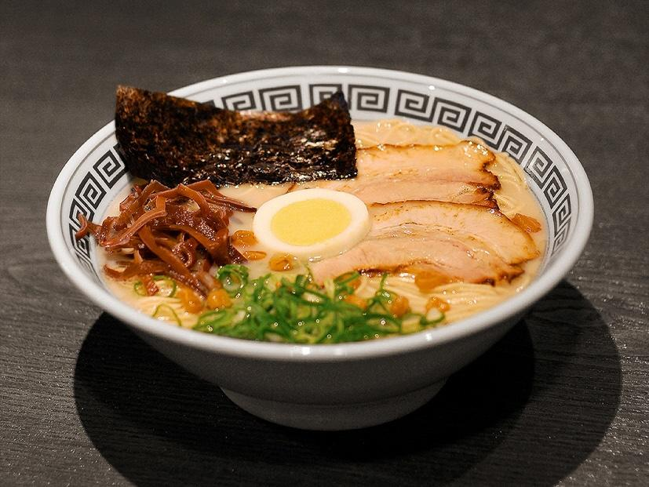

Kurume Ramen
「久留米ラーメン — El origen del tonkotsu, intenso y lleno de historia.」
El Kurume Ramen es la raíz del ramen tonkotsu moderno. Su caldo espeso se prepara con huesos de cerdo cocidos durante más de 12 horas, resultando en un sabor intenso y turbioso. Es una versión más rústica y fuerte del ramen de Fukuoka, perfecta para los amantes del sabor potente.
Ingredientes
- Caldo de huesos de cerdo
- Fideos delgados
- Cerdo chashu, ajo frito y cebollín
- Salsa de soya ligera
Sabor
Profundo, salado y con matices ahumados.
Aroma
Rico, intenso y carnoso.
Textura
Espesa y sedosa, con cuerpo pesado y reconfortante.